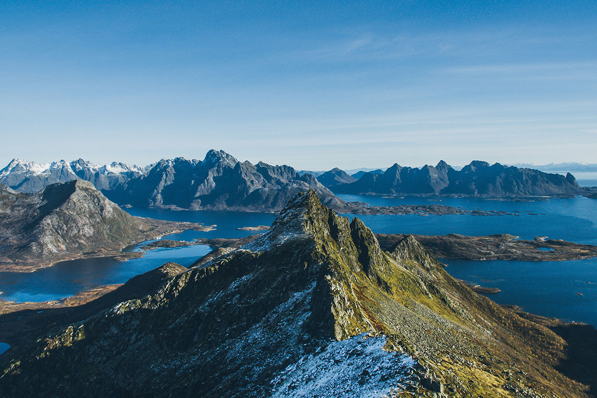

Archipelag Lofoty
Lofoty to archipelag norweski, zlokalizowany na północ od koła podbiegunowego, który składa się z ponad stu wysp, wysepek i skał.

Lofoty znane są przede wszystkim z malowniczych krajobrazów, które złożone są z wysokich, stromych gór, szmaragdowych jezior i gęstych lasów. Wszystko to splata się w niezwykłą, surową scenerię, która przyciąga turystów z całego świata.
Lofoty to również raj dla miłośników sportów wodnych. Przede wszystkim, turystom poleca się wycieczki łodzią, podczas których można podziwiać zapierające dech w piersiach krajobrazy, a także wędkowanie, które na archipelagu jest bardzo popularne. Lofoty słyną z ryb, w tym szczególnie z dorsza, który można łowić na oceanie. Osoby, które decydują się na wędkowanie na Lofotach, mogą skorzystać z usług lokalnych wędkarskich łodzi, które zabierają turystów w łowiska położone na otwartym morzu.
Na Lofotach znajduje się wiele miejscowości, w których można zatrzymać się na nocleg. Zwykle są to małe, malownicze miasteczka, w których można poczuć atmosferę archipelagu. W miasteczkach tych można także spróbować lokalnych specjałów, które są przyrządzane z ryb, w szczególności dorsza. Warto też odwiedzić muzea, w których można poznać historię Lofotów, a także poznać kulturę i zwyczaje ludności żyjącej na archipelagu.
Jednym z najważniejszych miast na Lofotach jest Svolvaer, które jest stolicą archipelagu. To miejsce, w którym można poczuć puls życia Lofotów i doświadczyć kultury oraz tradycji mieszkańców. W Svolvaer znajduje się wiele restauracji, kawiarni i barów, w których można spróbować lokalnych przysmaków. W mieście można także odwiedzić liczne galerie sztuki, w których prezentowane są dzieła artystów związanych z archipelagiem.
Podsumowując, Lofoty to wyjątkowe miejsce, które powinno znaleźć się na liście miejsc do odwiedzenia każdej osoby, która szuka niezapomnianych wrażeń. Archipelag oferuje malownicze krajobrazy, wspaniałe możliwości do uprawiania sportów wodnych, pyszne jedzenie i wiele innych atrakcji, które przyciągają turystów z całego świata.